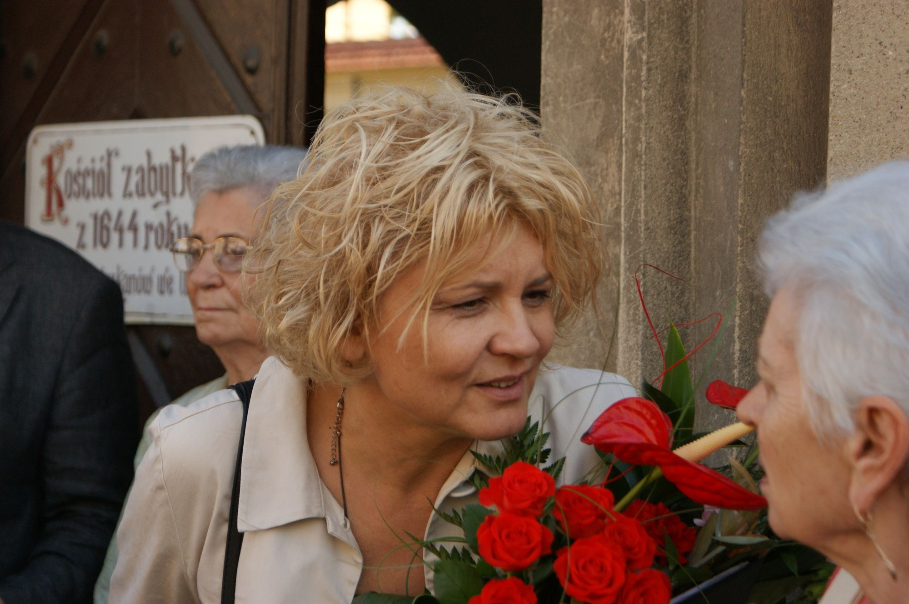

Mezzosopran
Dorota
Czerwińska
A. Vivaldi – Largo
Biografia
Jest absolwentką Wydziału Handlu Zagranicznego Akademii Ekonomicznej w Poznaniu oraz Wydziału Wokalno-Aktorskiego Akademii Muzycznej w Bydgoszczy, w klasie śpiewu solowego prof. Katarzyny Rymarczyk. W latach 1984–89 współpracowała z Pro Sinfoniką w Poznaniu, zaś już podczas studiów w AE i jako absolwentka śpiewała w Chórze Akademickim UAM w Poznaniu pod dyr. prof. Stanisława Kulczyńskiego. W latach 1993–2002 była solistką (mezzosopran) Teatru Muzycznego w Poznaniu.
W swoim repertuarze posiada partie operowe, operetkowe i musicalowe, m.in.: rolę Dorabelli (Così fan tutte Mozarta), Drugiej i Trzeciej Damy (Czarodziejski flet Mozarta), Czipry (Baron cygański J. Straussa), Jasia (Jaś i Małgosia Humperdincka). W tej ostatniej roli występowała także w Niemczech i Austrii. Śpiewała także partie: Lia San (Wiktoria i jej huzar Abrahama), Lizy (Hrabina Marica Kalmana), księcia Gigi (Zemsta nietoperza J. Straussa), Tangolity (Bal w Savoyu Abrahama), Wdowy (musical Zorba Kandera), Hrabianki rosyjskiej (Król walca J. Straussa) oraz Siostry Hubert (musical Siostrunie Goggina).
Wykonuje również repertuar oratoryjno-kantatowy. W roku 1990 założyła i do dziś prowadzi – jako dyrygentka i menedżerka – zespół dziecięco-młodzieżowy Semen Dei. Zespół nagrał 3 kasety i dwie płyty kompaktowe, koncertował w wielu miastach Polski, a także w Niemczech, Austrii, Norwegii i Francji. Zespół zdobył wiele nagród i wyróżnień na konkursach i festiwalach, m.in.: I miejsce na Sacrosongu w Swarzędzu (1993), główna nagroda na Śremsongu (1996, 1997), I miejsce na Ogólnopolskim Festiwalu Pieśni Religijnej w Żywcu (1996), wyróżnienie (2001) i I miejsce (2002) na Festiwalu Piosenki Religijnej Święta Góra w Gostyniu. W 2001 roku zespół nagrał autorski program dla TVP.
Od sezonu artystycznego 2002/2003 współpracuje z Lubuskim Biurem Koncertowym jako prelegentka i śpiewaczka.